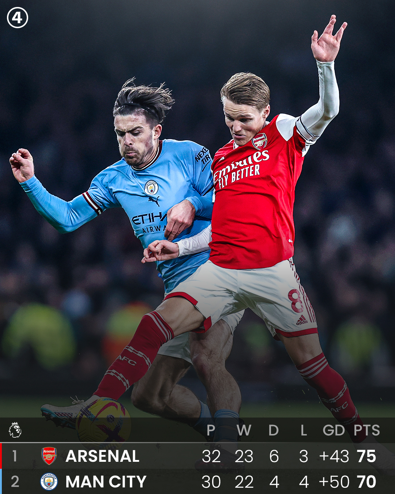

Arsenal Lead the Title Race by 5 Points
As of the latest update, Arsenal is leading the Premier League title race with a 5-point advantage over Manchester City, but City still has two games in hand.
Arsenal recently drew a game to Southampton, who are currently sitting at the bottom of the table, which could have been a costly mistake in their title bid.
Next up, Arsenal will face Manchester City at the Etihad, and they will be looking for a win to extend their lead and boost their chances of securing the Premier League title.
Buy Tickets More infoCan Manchester City Catch Up?
Erling Haaland, the formidable striker of Manchester City, has been on fire this season with an astonishing 32 goals in the Premier League, making him a leading force in the race for the coveted Golden Boot.
Meanwhile, the young gun Gabriel Martinelli has been a revelation for Arsenal, netting an impressive 15 goals in the Premier League and proving to be a real game-changer for his team. With his pace and precision in front of the goal, Martinelli has quickly become a fan favorite and a rising star in the world of football.
As we near the end of the season, the race for the Premier League title is heating up! With top teams battling it out on the pitch, the question on everyone's minds is - who will emerge victorious as the champions? So, tell me, who do you think will take home the coveted trophy this season? Will it be a nail-biting finish? Let's wait and watch as the drama unfolds on the field!